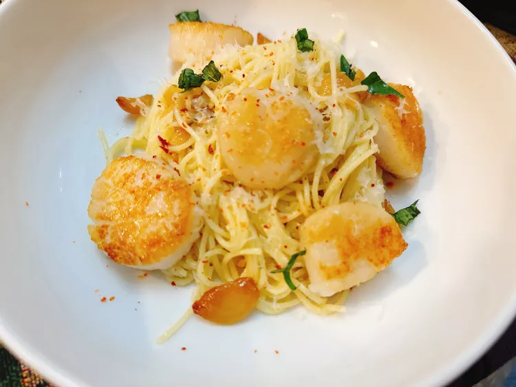

Roasted Garlic Pasta

INGREDIENTS
- 2 tablespoons finely chopped Italian parsley
- 1 lemon, zested
- 1 tablespoon lemon juice, or more to taste
- 1/2 teaspoon crushed red pepper flakes
- 1/4 cup peeled garlic cloves
- 1/2 cup extra-virgin olive oil
- salt and freshly ground black pepper to taste
- 6 ounces angel hair pasta
- 3 ounces pecorino Romano cheese, grated, plus more for serving
STEPS
- Preheat the oven to 375 degrees F (190 degrees C). Add garlic to a small oven-safe dish; pour olive oil on top to submerge the garlic. Cover the dish with a lid or foil.
- Bake garlic in the preheated oven for 1 hour.
- Add parsley, lemon zest, lemon juice, and red pepper flakes to a large bowl.
- At the 50-minute mark, bring a large pot of salted water to a boil; add pasta and cook until tender with a bite, 4 to 5 minutes. Drain; set aside to keep warm.
- Remove roasted garlic from the oven, and carefully pour off the oil into the bowl with parsley mixture. Add in roasted garlic, leaving cloves intact, or crushing some or all of them. Stir in cheese. Season to taste with salt and black pepper.
- Stir pasta into the bowl with sauce, coating each and every noodle. Divide between 2 bowls. Sprinkle with a little more cheese if desired, and enjoy.